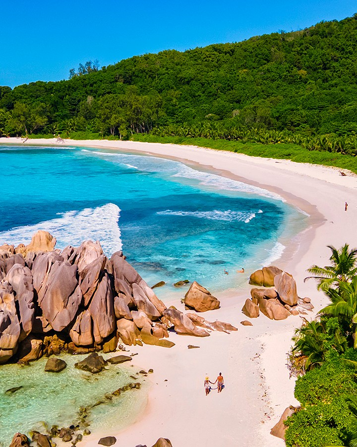

8 Fascinating Facts About the Seychelles
TCS
World Travel
Emma Thomson
The Seychelles is a paradise with deep blue waters teeming
with sea life and gorgeous, unspoiled shores. But there’s more
to this remote island archipelago than just beautiful beaches.

Here are 8 fascinating facts about this incredible archipelago
in the Indian Ocean.
1. The Seychelles was once a pirate hideout, in particular Anse
Forbans (Pirate’s Cove) on Mahé and Côte d’Or on Praslin. It is
believed that famous pirate Olivier Levasseur hid a treasure
worth more than $160,000 that remains unfound.
2. Bird Island is home to the heaviest land tortoise living in
the wild, Esmeralda, who tips the scales at 670 pounds.
3. Moyenne Island in Saint Anne Marine National Park is
believed to be haunted by a spirit that stands guard over
buried treasure.
4. The coco de mer, native to the islands, produces the largest
seed in the world. The distinctly shaped nut can weigh up to 33
pounds.
5. Victoria, the capital of the Seychelles, is the smallest in
the world and can be easily explored on foot in less than a day.
6. James Bond author Ian Fleming visited the Seychelles in 1958
looking for adventure and inspiration for his then-latest
collection of stories, For Your Eyes Only.
7. The Seychelles has some of the rarest endemic birds,
including the bare-legged Scops owl, which is so rare that it
was once thought to have become extinct before being
rediscovered in 1959.
8. Breadfruit is very popular on the Seychelles and can be
eaten in a variety of ways from fried to boiled. Legend has
it that anyone who eats it while on the islands will
return someday.

Anse Marron, La Digue
Locals speak of this wild spot on the southernmost
tip of La Digue with reverence, but word is starting
to spread among travellers. A steep hike of several
hours through forest reveals a near-perfect
semicircle of sizeable granite boulders, blocking
off the deep-blue Indian Ocean to leave a natural
saltwater pool. Deep turquoise in colour, it melts
seamlessly into sugar-fine sands
Hire a guide to help you find this magical spot;
going alone would be a fool’s errand. Once you’ve
completed your hard-earned dip, you can return to
Le Nautique on the comparatively bustling west coast
for poolside sundowners or snoozes in sea-facing
rooms.